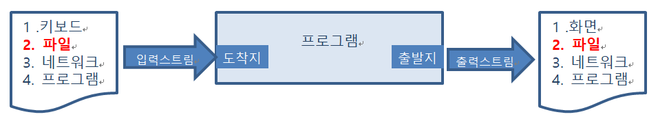

I/O (Input/Output)
I/O (input output)
목표 :
①자바 i/o stream 개념에 대해 안다.
②파일 입출력 API를 이용하여 text를 읽고 쓸 줄 안다.
③File copy 프로그램을 구현한다.
1. 입출력이란?
I/O란? 입력(Input)과 출력(Output)을 뜻 합니다.
컴퓨터한테 입력하는 것은 Input이며, 컴퓨터가 어떤 것을 출력하는 것을 Output이라고 합니다.
앞에서 살펴본 ‘System.out.println("HelloWorld~~");’ 구문이 바로 Output 입니다.
앞으로 여러분은 어떤 데이터를 ‘읽는다’ 라고 하면 입력(Input)이라고 생각하시면 되고,
데이터를 ‘쓴다‘라고 하면 출력(Output)이라고 생각 하면 됩니다.
(1) Input : 파일 데이터를 읽는다. 키보드의 데이터를 읽는다. 네트워크상의 데이터를 읽는다(전송)
(2) Output :파일에 데이터를 쓴다. 모니터에 데이터를 쓴다(출력). 네트워크상에 데이터를 쓴다(전송)
2. Java에서의 파일입출력 API
(1) InputStream : 1byte단위 입력 API. 이미지, 동영상 등의 데이터에 주로 사용
(2) OutputStream : 1byte단위 출력 API. 이미지, 동영상 등의 데이터에 주로 사용
(3) Reader : 2byte단위 입력 API. 문자열에 주로 사용
(4) Writer : 2byte단위 출력 API. 문자열에 주로 사용
| 이미지 동영상 등 데이터용(1byte 단위) | 문자열용 (2byte 단위) | |
| 입력 API | InputStream | Reader |
| 출력 API | OutputStream | OutputStream |

스트림(Stream)
cf. 스트림(Stream)이란 데이터를 운반(입출력)하는데 사용되는 연결통로.
연속적인 데이터의 흐름을 물(stream)에 비유해서 붙여진 이름. 하나의 스트림으로 입출력을 동시에 수행할 수 없다(단방향통신).
입출력을 동시에 수행하려면 2개의 스트림이 필요하다.
① 파일로부터 데이터를 읽는 3단계 : 파일(연결통로)을 연다 -> 파일의 데이터를 읽는다(필요한 만큼 반복) -> 파일을 닫는다
② 파일에 데이터를 쓰는 3단계 : 파일(연결통로)을 연다 -> 파일에 데이터를 쓴다 -> 파일을 닫는다
(1) InputStream 사용법
① InputStream(추상) 클래스를 상속받은 여러 가지 API 하위 클래스 중의 하나를 이용해서 객체를 만든다.
또는 다른 클래스의 메소드에서 반환(리턴)되는 타입 객체를 얻는다.
② read(), read(byte[]) 두 개의 메소드를 이용하여 데이터를 읽는다.
i. read() 1byte씩 읽는다. 속도가 느리다
ii. read(byte[]) byte[]만큼씩 읽는다. 속도가 빠르다.
package com.tj.ex1bytestream;
import java.io.FileInputStream;
import java.io.FileNotFoundException;
import java.io.IOException;
import java.io.InputStream;
// 1. 파일 스트림을 연다. 2. read 한다.
public class InputStreamEx01 {
public static void main(String[] args) {
InputStream is = null;
try {
is = new FileInputStream(
"C:/Users/Leos/Desktop/Dev/webstudy/1_java/Chapter16_InputOutput/inTest.txt");
while (true) {
int temp = is.read(); // 파일을 1byte 씩 읽어온다. 읽어오는 값이 없다면 -1 을 반환한다.
if (temp == -1) { // 파일의 끝까지 읽었다면 반복문 탈출 (temp 에 -1 이 들어옴)
break;
} else {// 파일의 끝이면 while 반복문 빠져나감.
// System.out.println("데이터 : " + (char) temp + " ASCII : " + temp);
System.out.print((char)temp);
}
}
} catch (FileNotFoundException e) {
System.out.println(e.getMessage() + "파일을 찾지 못했습니다.");
} catch (IOException e) {
System.out.println(e.getMessage() + "파일을 읽지 못했습니다.");
} finally {
try {
if (is != null) { is.close(); } // 값이 있을때문 닫는 작업을 해야한다.
} catch (IOException e) {
System.out.println(e.getMessage()+"read 오류");
}
}
System.out.println();
System.out.println("프로그램 끝");
}
(2) OutputStream :
OutputStream 사용법
① OutputStream(추상) 클래스를 상속받은 여러가지 API 하위 클래스들 중의 하나를 이용해서 객체를 만든다.
또는 다른 클래스의 메소드에서 반환(리턴)되는 타입 객체를 얻는다.
② write()메소드를 이용해서 데이터를 읽으면 됩니다.
③ write(), write(byte[]), write(byte[], int, int) 세개의 메소드를 이용할 수 있습니다.
④ write(byte[], int, int)는 데이터를 원하는 위치에서 원하는 숫자만큼 쓸 수 있습니다
package com.tj.ex1bytestream;
import java.io.FileNotFoundException;
import java.io.FileOutputStream;
import java.io.IOException;
import java.io.OutputStream;
// 1. 파일을 연다.(스트림 객체 생성) 2. Write 한다. 3. 파일을 닫는다.(스트림 객체를 제거한다. close)
public class OutputStreamEx2 {
public static void main(String[] args) {
OutputStream os = null;
try {
// 두번째 인자값으로 true 를 주면 '추가' 기능으로 작동한다. 파일을 덮어쓰지 않고 내용을 추가한다. 기본은 false.
os = new FileOutputStream(
"C:/Users/Leodays/Desktop/Dev/webstudy/1_java/Chapter16_InputOutput/outTest.txt", true);
String temp = "\n안녕하세요\r\n어서오세요"; // 파일에 쓸 문자열을 만든다.
byte[] bs = temp.getBytes(); // 문자열을 byte 로 바꾸어 줍니다.
// for (int i = 0; i < bs.length; i++) {
// os.write(bs[i]); // 1byte 씩 파일에 쓴다. 한글도 자기가 알아서 한다
// }
os.write(bs); // 알아서 1byte 씩 써서 작업을 완료한다.
} catch (FileNotFoundException e) {
System.out.println(e.getMessage() + "파일을 만들수 없습니다");
} catch (IOException e) {
System.out.println(e.getMessage() + "파일을 쓸 수 없습니다");
} finally {
// 파일을 닫는다.
try {
if(os != null) { os.close(); } // FileOutputStream 를 닫는다.
} catch (IOException e) {
System.out.println(e.getMessage() + "쓰다가 예외 발생");
}
}
System.out.println();
System.out.println("프로그램 종료");
(3) 예외 처리와 무조건 close() 실행
① I/O를 하면서 반드시 해야 하는 예외처리가 있습니다.
IOException입니다. 반드시 하도록 컴파일러가 강요합니다
② I/O 작업 마지막은 close()로 외부 연결을 끝내야 합니다
파일 읽고 쓰기 - File Copy
(1) 읽고, 쓰기를 동시에 – 파일 복사
① 파일을 읽고, 다른 파일에 쓰고, 결국은 파일 복사 입니다.
② 작업순서 : InputStream, OutputStream 준비 > is로 읽어들인 데이터를 os으로 씀 > 외부연결 close()함.
1단계 file copy
package com.tj.ex1bytestream;
import java.io.FileInputStream;
import java.io.FileOutputStream;
import java.io.InputStream;
import java.io.OutputStream;
// 1 InputStream(image.jpg) , OutPutStream (image_copy.jpg) 객체 생성
// 2. inputStream으로 read 해서 temp 변수에 넣어 temp 변수 내용을 outputStream 으로 write
// 위 2번 과정을 temp 가 -1 이 될때까지 계속
// 3. inputStream 객체도 outputSteam 객체도 close() 한다.
public class FileCopyStep1 {
public static void main(String[] args) {
InputStream in = null;
OutputStream out = null;
try {
in = new FileInputStream(
"C:/Users/Leodays/Desktop/Dev/webstudy/1_java/Chapter16_InputOutput/image.jpg");
out = new FileOutputStream(
"C:/Users/Leodays/Desktop/Dev/webstudy/1_java/Chapter16_InputOutput/image_copy.jpg");
int i = 0;
while (true) {
int temp = in.read(); // read() 반환이 int 이기 때문에 temp는 int 로 받는다.
i++;
if (temp == -1) { break; }
else {
out.write(temp);
}
}
System.out.println("반복문의 횟수는 : " + i);
} catch (Exception e) {
System.out.println(e.getMessage());
} finally {
try {
if(out != null) { out.close(); }
if(in != null) { in.close(); }
} catch (Exception e) {
System.out.println(e.getMessage());
}
}
}
}
2단계 : filecopy 약간 수정 보완한 예제
package com.tj.ex1bytestream;
import java.io.FileInputStream;
import java.io.FileOutputStream;
import java.io.InputStream;
import java.io.OutputStream;
// 1 InputStream(image.jpg) , OutPutStream (image_copy.jpg) 객체 생성
// 2. inputStream으로 read 해서 temp 변수에 넣어 temp 변수 내용을 outputStream 으로 write
// 위 2번 과정을 temp 가 -1 이 될때까지 계속
// 3. inputStream 객체도 outputSteam 객체도 close() 한다.
public class FileCopyStep2 {
public static void main(String[] args) {
InputStream in = null;
OutputStream out = null;
try {
in = new FileInputStream(
"C:/Users/Leodays/Desktop/Dev/webstudy/1_java/Chapter16_InputOutput/image.jpg");
out = new FileOutputStream(
"C:/Users/Leodays/Desktop/Dev/webstudy/1_java/Chapter16_InputOutput/image_copy2.jpg");
int i = 0;
byte[] btemp = new byte[1024]; // 파일을 읽어 들일때 byte 단위로 끊어 온다.
while (true) {
int count = in.read(btemp); // 반환이 int 이기 때문에 temp는 int 로 받는다. 가져올것이 없을때 -1 을 반환.
i++;
if (count == -1) { break; }
else {
out.write(btemp, 0, count); // write( 데이터배열, 시작점, 데이터 끝까지);
}
}
System.out.println("반복문의 횟수는 : " + i);
} catch (Exception e) {
System.out.println(e.getMessage());
} finally {
try {
if(out != null) { out.close(); }
if(in != null) { in.close(); }
} catch (Exception e) {
System.out.println(e.getMessage());
}
}
3단계 더욱더 약간 수정 보완한 예제
package com.tj.ex1bytestream;
import java.io.File;
import java.io.FileInputStream;
import java.io.FileOutputStream;
import java.io.InputStream;
import java.io.OutputStream;
// 1 InputStream(image.jpg) , OutPutStream (image_copy.jpg) 객체 생성
// 2. inputStream으로 read 해서 temp 변수에 넣어 temp 변수 내용을 outputStream 으로 write
// 위 2번 과정을 temp 가 -1 이 될때까지 계속
// 3. inputStream 객체도 outputSteam 객체도 close() 한다.
public class FileCopyStep3 {
public static void main(String[] args) {
InputStream in = null;
OutputStream out = null;
try {
File orignalFile = new File(
"C:/Users/Leodays/Desktop/Dev/webstudy/1_java/Chapter16_InputOutput/image.jpg");
in = new FileInputStream(
"C:/Users/Leodays/Desktop/Dev/webstudy/1_java/Chapter16_InputOutput/image.jpg");
out = new FileOutputStream(
"C:/Users/Leodays/Desktop/Dev/webstudy/1_java/Chapter16_InputOutput/image_copy3.jpg");
// 읽어오는 파일을 File class 객체로 만들어야 해당 사이즈를 얻어오는 함수가 있다.
// length() 반환값은 long 이다. 그래서 int 로 casting
byte[] btemp = new byte[(int) orignalFile.length()]; // 파일을 읽어 들일때 byte 단위로 끊어 온다.
while (true) {
int count = in.read(btemp); // 반환이 int 이기 때문에 temp는 int 로 받는다. 가져올것이 없을때 -1 을 반환.
if (count == -1) {
break;
} else {
out.write(btemp, 0, count); // write( 데이터배열, 시작점, 데이터 끝까지);
}
}
} catch (Exception e) {
System.out.println(e.getMessage());
} finally {
try {
if(out != null) { out.close(); } // in 열고 out 을 열었다면 닫는것은 out -> in 순서대로 닫아줌.
if(in != null) { in.close(); }
} catch (Exception e) {
System.out.println(e.getMessage());
}
}
}
}
오늘의 예제
1.Scanner 객체를 활용하여 아래와 같은 데이터를 입력받아 데이터 파일에 저장.
저장된 파일의 데이터를 불러 ArrayList에 넣고 콘솔출력하시오.
/* Scanner 클래스를 활용하여 위와 같은 데이터를 입력하여 데이터 파일에 저장,
저장된 파일의 데이터를 불러 리스트하는 처리. */
| 저장될 형태 | ID | IP | 접속시간 TIME |
| apple | 192.168.0.1 | 14 | |
| banana | 192.124.0.1 | 14 | |
| mango | 192.142.2.1 | 14 |
User Class
package com.tj.ex2ioclass;
public class User {
private String id;
private String ip;
private int time;
public User () {}
public User(String id, String ip, int time) {
this.id = id;
this.ip = ip;
this.time = time;
}
@Override
public String toString() {
return "[id=" + id + ", ip=" + ip + ", time=" + time + "]";
}
public String getId() {
return id;
}
public void setId(String id) {
this.id = id;
}
public String getIp() {
return ip;
}
public void setIp(String ip) {
this.ip = ip;
}
public int getTime() {
return time;
}
public void setTime(int time) {
this.time = time;
}
}
LogMain Class
package com.tj.ex2ioclass;
import java.io.*;
import java.util.*;
// do while 문을 이용하여 id ip time 을 받아 데이터 파일로 출력.
// 데이터 파일의 정보를 arrayList 에 입력받아 콘솔에 출력
public class LogMain {
public static void main(String[] args) {
Scanner sc = new Scanner(System.in);
OutputStream os = null;
DataOutputStream dos = null;
String id, ip; int time;
String fn; // 기능 선택 변수
File file = new File(
"C:/Users/Leodays/Desktop/Dev/webstudy/1_java/Chapter16_InputOutput/data.txt");
ArrayList<User> users = new ArrayList<User>();
try {
os = new FileOutputStream(file,true); // 파일의 내용을 추가한다. 덮어쓰지 않음. 기본은 false
dos = new DataOutputStream(os);
do {
System.out.println("접속자가 더 있나요(Y/N)");
fn = sc.next();
if(fn.equalsIgnoreCase("n")) {
break; // 반복문 탈출
}else if (fn.equalsIgnoreCase("y")) { //대소문자를 구분하지 않고 입력된 문자를 비교해서 논리값을 리턴한다.
System.out.print("id는?");
dos.writeUTF(sc.next());
System.out.print("ip는?");
dos.writeUTF(sc.next());
System.out.print("접속시간은 (0~24시)?");
dos.writeInt(sc.nextInt());
}
}while(true);
} catch (FileNotFoundException e) {
System.out.println(e.getMessage());
} catch (IOException e) {
System.out.println(e.getMessage());
} finally {
try {
if (dos != null) { dos.close(); }
if (os != null) { os.close(); }
} catch (IOException e) {
System.out.println(e.getMessage());
}
} // 파일 출력 try-catch-finally
}
}
LogOutMain Class
package com.tj.ex2ioclass;
import java.io.*;
import java.util.*;
// do while 문을 이용하여 id ip time 을 받아 데이터 파일로 출력.
// 데이터 파일의 정보를 arrayList 에 입력받아 콘솔에 출력
public class LogOutMain {
public static void main(String[] args) {
InputStream is = null;
DataInputStream dis = null;
ArrayList<User> users = new ArrayList<User>(); //user 참조형 만 들어가는 ArrayList
File file = new File(
"C:/Users/Leodays/Desktop/Dev/webstudy/1_java/Chapter16_InputOutput/data.txt");
String id, ip; int time;
try {
is = new FileInputStream(file);
dis = new DataInputStream(is);
// 데이터를 가져와야 함. id ip time
while (true) {
id = dis.readUTF(); // readUTF() 문자열을 읽어올때 사용
ip = dis.readUTF();
time = dis.readInt(); // readInt() 정수값을 읽어올때 사용
users.add(new User(id, ip, time));
}
} catch (FileNotFoundException e) {
System.out.println(e.getMessage());
} catch (IOException e) {
// System.out.println(e.getMessage());
} finally {
try {
if (dis != null) { dis.close(); }
if (is != null) { is.close(); }
} catch (Exception e) {
System.out.println(e.getMessage());
}
} // 파일 출력 try-catch-finally
// users 내용르 출력해본다.
for(User ut : users) {
System.out.println(ut);
}
}
}